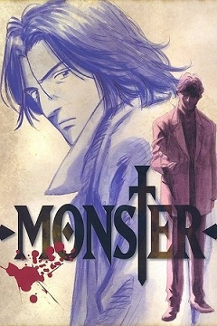

Monster
Genre: Crime, Mystery, Psychological thriller
Director: Naoki Urasawa
Aired in Japan
Release Year: 1994
Plot Summary: The story revolves around Kenzo Tenma, a Japanese surgeon living in Düsseldorf, Germany whose life enters turmoil after he gets himself involved with Johan Liebert, one of his former patients, who is revealed to be a psychopathic serial killer.
Reasoning: Deep characters with complex background, Gives deeper sight into human psychology and delves even deeper on the consept of nihilism.